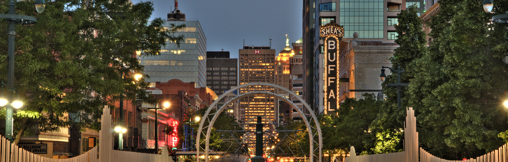

Buffalo's population is 886,000. The average income for a person in Buffalo is $24,536 comparatively the average income for people in New York is 36,302.

The Holland Land Company's Joseph Ellicott planned the town in 1803–1804. Known as New Amsterdam, but more commonly called Buffalo.

The westernmost tip of New York State is made up of eight counties that make up the Buffalo Niagara region. Forty percent of the US population lives within 500 miles or 800 km of the region, which is strategically positioned. Due to its international border, it serves as a bi-national trade gateway, enabling $83 billion in trade between the US and Canada each year.

Buffalo is a metropolis of a vast urban complex that encompasses the towns (townships) of Amherst, Cheektowaga, Hamburg, Lancaster, and West Seneca, as well as the cities of Lackawanna, Lockport, Niagara Falls, and Tonawanda–North Tonawanda. Buffalo is New York's second-largest city.
.